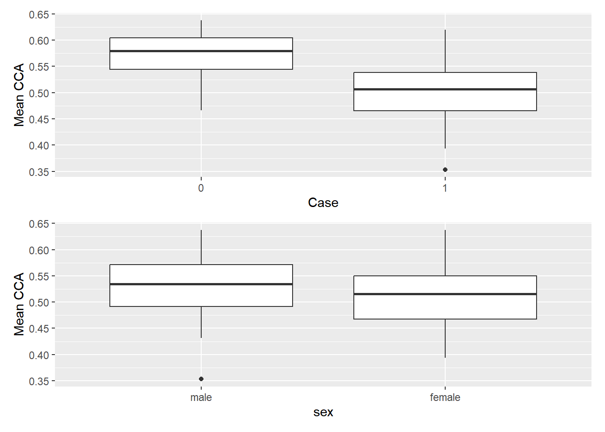

Resposta dos exercícios propostos
Dia 01
Exercício 1.1
Como variam as medidas de AF ao longo da CCA em indivíduos com esclerose múltipla?
R: Apesar do grande “range” de valores de AF, a grande maioria das curvas pode ser bem representada pelo formato obtido com a média de todas as curvas (figura abaixo). Contudo principalmente na parte central da imagem podemos notar que o comportamento é muito mais errático. Essas variações nos valores de AF para o diferentes indivíduos podem estár associadas a diferentes localizações, extensão e gravidade da desmielinização do corpo caloso (CCA).
Exercício 1.2
Qual é a associação entre as medidas de anisotropia fracionada (fractional anisotropy, FA) e as funções cognitivas (pontuações do teste PASAT)?
Éssa é uma pergunta que pode ser respondida de modo mais efetivo ao utilizarmos as técnicas que serão apresentadas mais adiante no curso. Contudo, vamos fazer uma primeira abordagem visual.

Através da figura acima podemos notar que notas mais baixas de PASAT estão relacionadas a valores mais baixos de AF, principalemnte na parce central do corpo caloso.
Exercício 1.3
O perfil típico de anisotropia fracionada (fractional anisotropy, FA) varia entre pacientes com esclerose múltipla e indivíduos saudáveis?
Para responder essa questão vamos dar uma olhada nos perfis dos pacientes com EM e nos pacientes saudáveis
Através da comparação dos gráficos é fácil notar que apesar de apresentarem m comportamento médio pareceido (formato da curva), os valores de AF dos pacientes com EM são mais baixos (gráfico da esquerda) do que os pacientes saudáveis (gráfico da direita).
Conforme indicado na questão anterior, existe uma aparente correlação entre as notas de PASAT e os valores de AF. O que nos daria um bom modo de testar, mesmo que de modo indireto, se a diferença entre os valores de de AF para pacientes com e sem EM é significativa. Entretanto, infelizmente o conjunto de dados não apresenta as notas de PASAT para pacientes saudáveis. Assim sendo vamos utilizar os valores médios de AF para cada paciente.
DTI4 <- DTI %>%
filter(visit == 1)
#vamos dar uma olhada se as classes estão balanceadas
freq_relativa <- DTI4 %>%
count(sex, case) %>%
mutate(freq_rel = n / sum(n))
print(freq_relativa) sex case n freq_rel
1 male 0 30 0.21126761
2 male 1 66 0.46478873
3 female 0 12 0.08450704
4 female 1 34 0.23943662freq_relativa %>%
ggplot(aes(x = sex, y = freq_rel, fill = as.factor(case))) +
geom_bar(stat = "identity", position = position_dodge()) +
labs(x = "Sex", y = "Proportion", fill = "Case") +
theme_minimal()Essas classes parecem um pouco desbalanceadas, vamos tentar melhorar isso.
# Contagem das classes
contagem_classes <- DTI4 %>%
count(case,sex)
# Identificar a classe majoritária e a classe minoritária
classe_majoritaria <- contagem_classes %>%
filter(n == max(n)) %>%
pull(case)
classe_minoritaria <- contagem_classes %>%
filter(n == min(n)) %>%
pull(case)
# Subamostragem da classe majoritária para igualar o número de observações
dados_balanceados <- DTI4 %>%
group_by(sex) %>%
sample_n(size = max(contagem_classes$n), replace = TRUE) %>%
ungroup()
# Verificar a contagem das classes nos dados balanceados
contagem_classes_balanceadas <- dados_balanceados %>%
count(sex, case)
print(contagem_classes_balanceadas)# A tibble: 4 × 3
sex case n
<fct> <dbl> <int>
1 male 0 18
2 male 1 48
3 female 0 23
4 female 1 43freq_relativa2 <- contagem_classes_balanceadas %>%
count(sex, case) %>%
mutate(freq_rel = n / sum(n))
freq_relativa2 %>%
ggplot(aes(x = sex, y = freq_rel, fill = as.factor(case))) +
geom_bar(stat = "identity", position = position_dodge()) +
labs(x = "Sex", y = "Proportion", fill = "Case") +
theme_minimal()Neste caso os grupos que queremos testar são independentes, ou você tem ou você não EM… Assim, o teste que me vem a mente para testar esa diferença entre os grupos é o teste t.
pacman::p_load(RVAideMemoire, car)
#Obitendo os valores médios para cada ID
df_teste<- dados_balanceados %>%
mutate(
mean_cca = rowMeans(dados_balanceados$cca, na.rm = TRUE),
case = as_factor(case)
) %>%
dplyr::select(ID,case,sex,mean_cca)
#glimpse(df_teste)
# Verificando a normalidade dos dados
byf.shapiro(mean_cca ~ case, df_teste)
Shapiro-Wilk normality tests
data: mean_cca by case
W p-value
0 0.9771 0.5683
1 0.9896 0.6958byf.shapiro(mean_cca ~ sex, df_teste)
Shapiro-Wilk normality tests
data: mean_cca by sex
W p-value
male 0.9896 0.8585
female 0.9760 0.2277Não encontramos evidencias para rejeitar as hipoteses nulas \(H_0\): distribuição dos dados = normal \(p > 0.05\).
Vamos verificar a homogeneidade de variâncias
leveneTest(mean_cca ~ case, df_teste)Levene's Test for Homogeneity of Variance (center = median)
Df F value Pr(>F)
group 1 8.3346 0.004557 **
130
---
Signif. codes: 0 '***' 0.001 '**' 0.01 '*' 0.05 '.' 0.1 ' ' 1leveneTest(mean_cca ~ sex, df_teste)Levene's Test for Homogeneity of Variance (center = median)
Df F value Pr(>F)
group 1 0.0359 0.85
130 \(H_0\): as variâncias dos grupos são homogêneas. Vamos seguir com o teste t
t.test(mean_cca ~ case, df_teste, var.equal=TRUE)
Two Sample t-test
data: mean_cca by case
t = 6.7243, df = 130, p-value = 5.051e-10
alternative hypothesis: true difference in means between group 0 and group 1 is not equal to 0
95 percent confidence interval:
0.03829808 0.07022817
sample estimates:
mean in group 0 mean in group 1
0.5504240 0.4961609 t.test(mean_cca ~ sex, df_teste, var.equal=TRUE)
Two Sample t-test
data: mean_cca by sex
t = 0.46751, df = 130, p-value = 0.6409
alternative hypothesis: true difference in means between group male and group female is not equal to 0
95 percent confidence interval:
-0.01308899 0.02118927
sample estimates:
mean in group male mean in group female
0.5150404 0.5109903 Assim, temos indícios para acreditar que existe diferença entre as pessos que tem e que não tem EM (rejeitamos a hipótese nula) e não existe diferença entre os gêneros (não rejeitamos a hipótese nula).
p1<- df_teste %>%
ggplot(aes(x = factor(case), y = mean_cca)) +
geom_boxplot() +
xlab("Case") +
ylab("Mean CCA")
p2<- df_teste %>%
ggplot(aes(x = factor(sex), y = mean_cca)) +
geom_boxplot() +
xlab("sex") +
ylab("Mean CCA")
plot_combinado2 <- p1 + p2 + plot_layout(ncol = 1)
print(plot_combinado2)
Os perfís variam sim entre individuos com e sem EM, e não variam entre pacientes de gênero distintos.
Exercício 1.4
Descreva as principais características dos perfis diários de temperatura.

Todas as curvas tem um comportamento muito parecido, com um aparente comportamento ciclico (só temos um ano no gráfico) inverno-verão. Contudo apresentam um range de temperaturas dependendo da localidade da estação. Localidades mais quentes apresentam em média, durante o inverno valores um pouco abaixo de zero e um pouco maiores que 20° no verão. Equanto localidades mais frias apresentam valores inferiores a -30° no inversno e ~5°/10° graus no verão.
Exercício 1.5
Qual é a associação entre a precipitação média anual e a temperatura diária em todo o Canadá?
Um bom modo de responder essa questão sería através da utilização da técnica de regressão de escalar em função (SoF/prf) que ainda não vimos. Em breve voltaremos a essa questão.
Exercício 1.6
E quanto à associação entre as precipitações diárias e os perfis de temperatura?
Assim como na questão anterior essa questão demanda uma técnica que ainda não foi apresentada, nesse caso Regressão de componentes principais funcionais (FPC) e Função em função - FoF (pffr).
Exercício 1.7
Como as contagens de CD4 variam ao longo do tempo na população, bem como no nível individual?
Essa pergunta busca compreender como as contagens de células CD4 mudam ao longo do tempo em indivíduos com HIV em tratamento. As contagens de CD4 são um indicador-chave da saúde imunológica das pessoas infectadas pelo HIV, e monitorar essas contagens ao longo do tempo pode fornecer informações valiosas sobre a progressão da doença e a eficácia do tratamento.
Em geral os dados apresentam um comportamento muito menos errático após o mes 0. Contudo, em nível individual o comportamento possui um range de valores bem grande.
Exercício 1.8
Descreva as principais direções nas quais as contagens de CD4 variam.
Não entendi bem essa pergunta…
Os dados apresentam comportamento muito diferentes entre os indivíduos.
Exercício 1.9
Descreva os gráficos - como a estratégia de corrida difere entre os corredores?
criar os gráficos e colocar um link para eles
Exercício 1.10
Como a velocidade varia ao longo de um percurso de uma maratona?
Exercício 1.11
Qual é a relação entre o comportamento da velocidade durante a maratona e o tempo de chegada?
Exercício 1.12
Qual é a melhor estratégia para terminar a maratona entre os cinco primeiros colocados?
Exercício 1.13
Descreva a variação do poluente em todo os Estados Unidos. (ainda não tem um dados para substituir)
Exercício 1.14
Descreva os principais modos de variação. (ainda não tem um dados para substituir)
Exercício 1.15
Como a altura varia em meninos e meninas?
Exercício 1.16
O gênero tem impacto no processo de crescimento de uma criança?
Exercício 1.17
Plote a taxa de crescimento de meninos e meninas e descreva-a.
Exercício 1.18
Explore os dados das curvas de crescimento de Berkeley
- Plote/descreva a função média.
- Plote/descreva a função de covariância.
- As funções média e de covariância diferem entre mulheres e homens?
Exercício 1.19
Reproduza os gráficos para os conjuntos de dados discutidos na terceira página. (Maratona,poluição,crescimento)
Dia 02
Exercício 2.1
Tente executar o código acima várias vezes. Experimente também executar o código com diferentes números de funções de base, por exemplo, nb <- 5, nb <- 15, nb <- 30. (colocar o link para a pagina onde tem o código mncionado)
Exercício 2.2
Agora tente executar o código com nbasis = 13, nbasis = 27 e nbasis = 365. Qual é o efeito de usar diferentes números de bases? (colocar o link onde tem o código mencionado)
Exercício 2.3
Tente este exercício com as medidas feitas em Quebec (l = 10). Você ainda escolhe K = 13 como o número ótimo de funções de base? E em relação a outras localidades? (colocar o link para a pagina onde está o código refetrente a pergunta)
Exercício 2.4
Experimente diferentes valores de λ (λ = 0.0001, λ = 100 e λ = 108) e discuta os resultados! (colocar o link do código)
Exercício 2.5
Existem várias maneiras de selecionar o λ ótimo; por exemplo, validação cruzada
(colocar o link para a pagina onde tem a compração entre cross-validation e generalized cross-validation)
Exercício 2.6
Explorar as funcções do do pacote mgcv
Função ksmooth (alisador de regressão de kernel) Exemplo (atividade para fazer em casa): experimente um kernel gaussiano (“normal”) e diferentes larguras de banda (0.1, 10, 30).
#fit = gam(y ~ s(t.day, k = 30, bs = "cr"), method = 'REML')
# fit = ksmooth(t.day, y, kernel = c("box"), bandwidth = 10)Exercício 2.7
Página 2: Experimente diferentes números de funções de base e ajuste OLS (atividade em grupo).
Exercício 2.8
Página 3: Exercício de validação cruzada com medidas de precipitação transformadas em logaritmo feitas em Quebec.
Exercício 2.9
Página 4: Experimente as funções gam e ksmooth; especialmente a função gam, pois a usaremos nos próximos capítulos!
Dia 03
Exercício 3.1
O que encontramos a partir dos resultados desta fPCA (análise de componentes principais funcionais)?
Exercício 3.2
Quanta variabilidade dos dados foi explicada pelo primeiro fPC (componente principal funcional)?
Exercício 3.3
Que característica das curvas o primeiro fPC (componente principal funcional) explica?
Exercício 3.4
Tente fazer os gráficos para o segundo e terceiro fPCs (componentes principais funcionais) e seus efeitos em relação à média geral.
Exercício 3.5
Discuta e interprete os resultados da fPCA (análise de componentes principais funcionais).
Exercício 3.6
Quantos CPs (componentes principais) são necessários para explicar 95% das variabilidades nos dados?
Exercício 3.7
What features of the underlying curves were captured by these PCs?
Exercício 3.8
Explore os gráficos interativos.
Exercício 3.9
Analisar os dados da Maratona (dois aspectos: tempo decorrido transformado em logaritmo e tempo por milha)
Plote / descreva os dados.
Plote / discuta as estimativas das funções média e de covariância.
Use gráficos interativos para explorar os resultados da fPCA e resuma suas descobertas.
Exercício 3.10
Analisar os dados do Poluente (foco no nível de sulfato transformado em logaritmo)
Plote / descreva os dados.
Plote / discuta as estimativas das funções média e de covariância.
Use gráficos interativos para explorar os resultados da fPCA e resuma suas descobertas.
Dia 04
Exercício 4.1
Experimente o gráfico interativo dos resultados da fPCA (plot_shiny(fpca_res)) e interprete. (Módulo 3-3)
Exercício 4.2
Voltando a questão do início…
Qual é a associação entre a precipitação total anual e a curva diária de temperatura?
Exercício 4.3
Explore os gr´sficos interativos (colocar o link para a perguinta)
Exercício 4.4
Qual é a associação entre os perfis de FA e as pontuações do teste PASAT em pacientes com esclerose múltipla em sua primeira visita? (regressão escalar em função)
Exercício 4.5
O conjunto de dados também inclui rcst - perfis de FA coletados do trato corticoespinhal direito. Como essas medidas se relacionam com as medidas de FA ao longo da CCA?
Exercício 4.6
Ajuste um modelo linear funcional com FA ao longo da CCA como resposta e pontuações do teste PASAT como covariável; tente diferentes funções R. Discuta gráficos interativos dos resultados da regressão função-em-escalar.
Exercício 4.7
Usaremos o conjunto de dados de DTI para ilustrar dados funcionais observados longitudinalmente amanhã. Tente plotar vários perfis observados de um paciente com esclerose múltipla selecionado aleatoriamente (algo semelhante ao exemplo abaixo). (ainda tem que criar os gráficos)
Dia 05
Exercício 5.1
Plote a trajetória predita de FA para um paciente com esclerose múltipla diferente / um tempo de visita diferente.
Exercício 5.2
Explore os gráficos interativos.